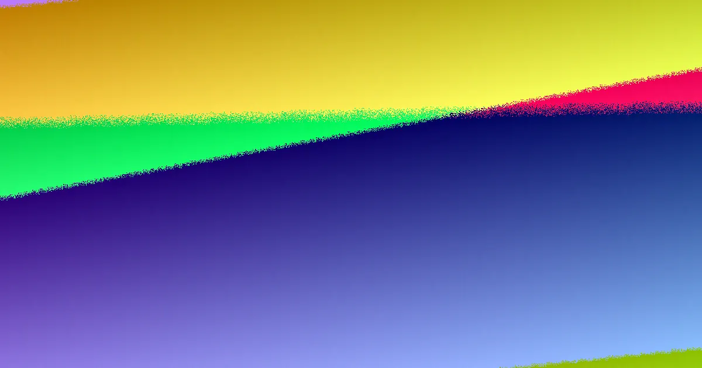

Most distorted price comparisons trace back to five myths: that the lowest total is best value, that a per-metre rate settles everything, that one remembered height rule decides approval, that a low wall is always lightly loaded, and that one material suits every site. Each fails because scope, not the visible face, drives cost. Dimensions, access, drainage, design, approvals and exclusions belong beside every total before figures are judged.
For local buyers, retaining wall quotes brisbane myths so every figure can be tested against the same brief.
Retaining Wall Quotes Brisbane Myths Explained
Most poor price comparisons begin with a belief that sounds sensible. Five come up again and again when owners assess figures for garden terraces, boundary walls and structural walls, and each one collapses once scope is examined. The list below names the myth, then the check that corrects it.
- The lowest total is the best value. A figure can be low because it describes only the wall line, not the excavation, drainage or restoration the site needs.
- A lineal-metre or square-metre rate settles it. A rate means little until retained height, site work, access and exclusions sit inside the same scope.
- One remembered height rule decides approval. Approval varies by address, so the relevant council or government source should be checked before any threshold is relied on.
- A low wall is lightly loaded. A driveway, building, pool boundary or another terrace above the wall can add load even at modest height.
- One material is the best choice everywhere. Concrete sleeper, timber sleeper, reinforced block, rock, boulder, sandstone and gabion systems each suit different conditions.
Why the lowest total rarely settles the question
Two quotes for the same stretch of ground can describe two different jobs. One may carry excavation, spoil movement, backfill, drainage, disposal, engineering and GST alongside the wall itself. Another may stop at the wall line. Placed side by side, the second figure can look like a saving when it is simply shorter.
Clear exclusions are workable. Hidden exclusions make comparison unreliable. The fix is to ask each provider to write assumptions down, especially where access is tight or water marks suggest drainage needs more than a casual allowance. Anyone weighing retaining wall quotes brisbane against real figures should treat undocumented assumptions as a cost waiting to appear.
Rates, remembered rules and walls carrying hidden load
A per-metre rate can help once scope is aligned, but it cannot do the aligning. Retained height at the highest and lowest points, drainage design, spoil routes and approval needs all move the number behind the rate. Two walls of identical length can justify very different rates once those factors are counted.
The height rule deserves the same caution. Approval varies by address, and even a low wall can sit beneath a driveway, building or another terrace that adds load. Pools, boundaries and the destination of collected water can change the answer as well. The relevant council or government source should be checked before any threshold is relied on.
The four-step brief that keeps quotes honest
The Retaining Wall Quotes Brisbane Planning Guide: 2026 Guide frames preparation around scope: understand the wall system, compare whole-of-scope cost drivers, check the authority pathway, then gather site information before prices are requested. The four essentials below turn that sequence into a brief any provider can price against.
- Dimensions. Record the approximate length plus the highest and lowest retained height. A single remembered height hides the slope that drives design.
- Photographs. Capture the wall line, slope, top, bottom, nearby structures, access points and any water signs.
- Constraints. Note gate width, stairs, side access and where equipment or spoil could move.
- Water behaviour. Describe ponding, outlets, erosion, staining and known stormwater connections.
With that brief, each provider can state whether drainage, backfill, engineering, approvals, disposal and GST are included, and the totals become comparable rather than merely adjacent.
Materials in plain terms: no universal best option
No single system wins on every site. The useful question is which system suits the wall height, footprint, access, drainage, design needs and landscape context described in the brief.
- Concrete sleeper. Steel-post and reinforced concrete sleeper systems suit garden, boundary and structural projects, scoped with access, drainage and approval needs.
- Timber sleeper. Suits garden and terraced applications where exposure, drainage and maintenance are considered.
- Reinforced block. Besser or core-filled block systems are linked with footing, drainage and structural design.
- Rock, boulder and sandstone. Footprint, batter, access, drainage and landscape context need assessment before prices are compared.
- Gabion. A further listed option, best weighed against the same site questions rather than chosen by habit.
Who this preparation applies to
This preparation suits owners planning a new wall, a repair or replacement, or an enquiry about drainage and water issues. It also helps when the project need is still unclear, because the first decision is what information makes a provider's answer meaningful. Garden terraces, boundary walls and walls showing visible water all benefit. A small job still needs dimensions and photos; a constrained job needs sharper questions about access, spoil movement, drainage, nearby structures and approval pathways. If a quote does not state what is included and excluded, ask for the scope to be rewritten before judging the total.
- Collect dimensions. Record the approximate length and the highest and lowest retained height before any price is requested.
- Photograph the site. Include the wall line, slope, top, bottom, nearby structures, access points and any water signs.
- Describe constraints. Note gate width, stairs, side access, ponding, outlets, erosion and known stormwater connections.
- Ask for inclusions. Have each provider state whether drainage, backfill, engineering, approvals, disposal and GST are included.
| Myth | Why it misleads | Check before comparing |
|---|---|---|
| Lowest total wins | Wall-only figures can omit excavation, restoration and drainage | Line up inclusions and exclusions beside each total |
| A per-metre rate is enough | Rates ignore retained height, site work and access | Align scope first, then use the rate |
| One height rule settles approval | Approval varies by address | Check the relevant council or government source |
| Low walls are lightly loaded | Driveways, buildings and terraces above add load | Describe everything sitting above the wall |
| One material is best | Systems suit different footing, drainage and access needs | Match the system to the site brief |
Common questions
Is the cheapest retaining wall quote the best value? Not on its own. One quote may cover excavation, drainage and restoration while another stops at the wall line. Put each provider's inclusions and exclusions side by side before treating a lower total as better value.
Does a lineal-metre or square-metre rate make quotes easy to compare? No. Neither rate is enough on its own. A rate helps only after retained height, site work, drainage, access, approvals and exclusions have been brought into the same scope.
Can one height rule tell me whether approval is needed? No. Approval varies by address, and even a low wall can carry extra load from a driveway, building or terrace above it. Check the relevant council or government source before relying on any threshold.
Independent editorial guide to preparing comparable retaining wall quotes in Brisbane, grounded in published planning material and public authority sources.